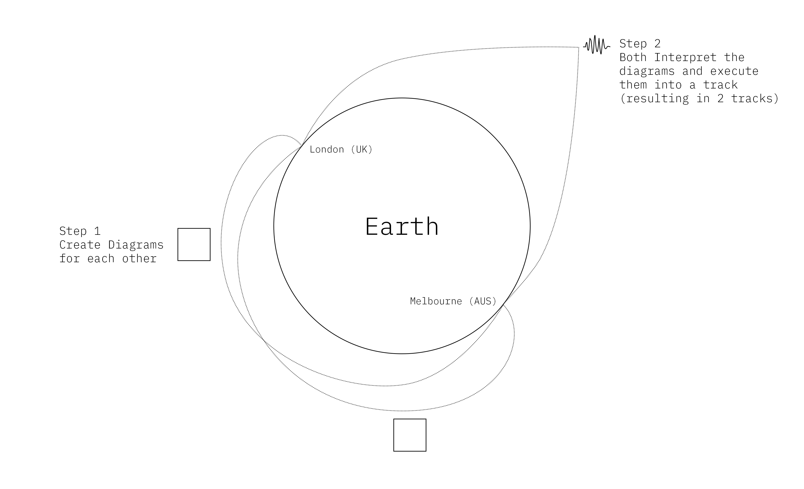
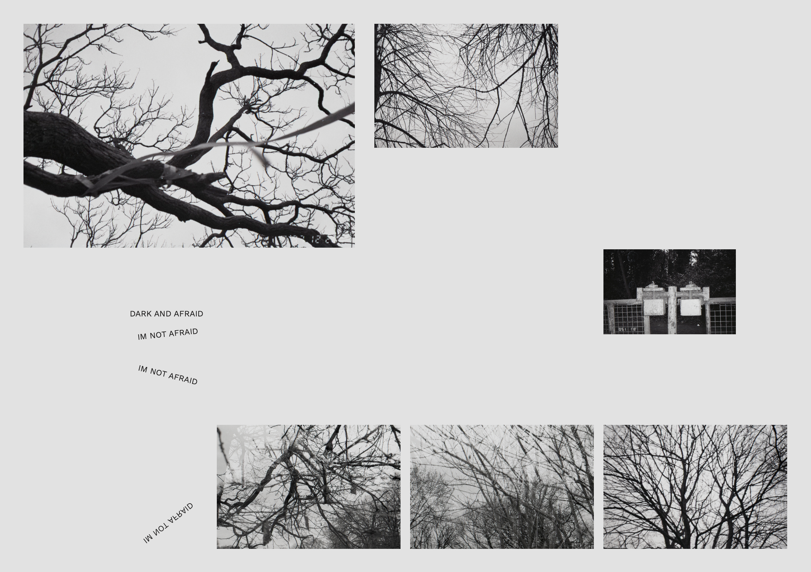
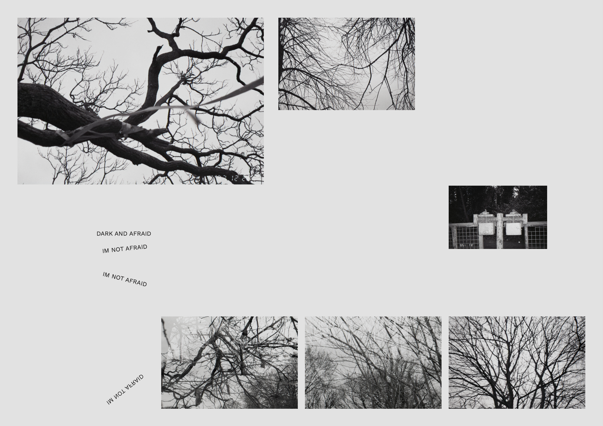

Diagrams as Instruction for collaboration
The project is about diagrams, I've been looking at poetry and trying to create diagrams of poems. Specifically, I have been looking at the spoken work of James Massiah (poet, producer and Dj) an artist that collaborates a lot with peers in the music community (commonly with Lord Tusk).
Collaboration was something that I wanted to look into, and something I appreciate in the world of design and music. Stefanie Posavec and Georgia Lupi worked on a collaborative project whereby they would send each other postcards visualising a set of data, the front of the card would be a visualisation and the back would have a key to contextualise it. This project was called Dear data.
This has led me to the idea of creating a musical collaboration across a long distance. A two track piece, responding to themes and interpretations of Massiah's Poem 'Afraid', where two individuals design a diagram for each other instructing the other on how to produce the response. the end result will be that each track is directed by one individual but produced by the other.

 
